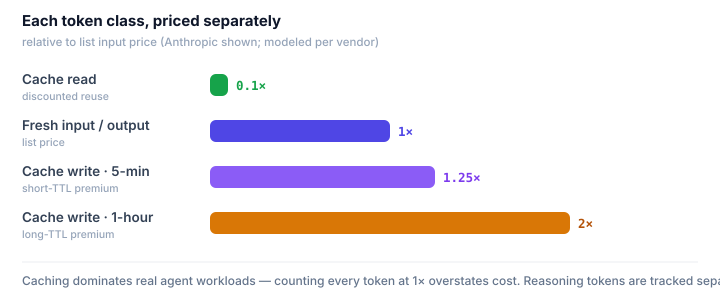
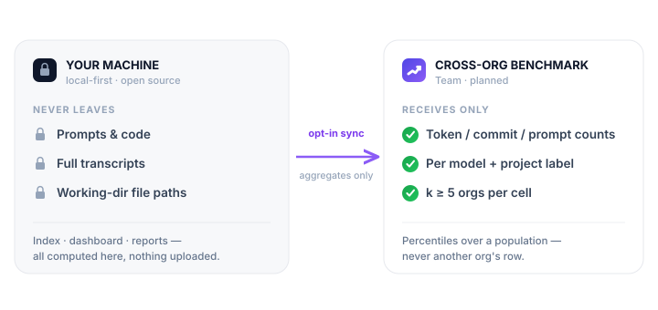

No black box. Every number Codenomics shows is derived from your agents' own logs with rules you can read, audit, and override. Here's exactly how.
The headline metric: true cost per commit
Token dashboards answer "how much did I spend?" Codenomics answers "what did each shipped change cost me?" — which is the question that actually compares one model, agent, or workflow against another.
Every input traces to your own logs and drivers — change a driver and every metric re-derives.
Three inputs, three sources of truth:
Compute $ — the API-equivalent dollar cost of every token, cache-aware (below).
Attention $ — the value of the human focus each interactive prompt consumes. You set the rate; machine/headless sessions contribute zero.
Time $ — optional. Your loaded hourly rate applied to active supervision time of human sessions.
The result: a model that costs more per token but needs fewer prompts and less of your attention to ship the same commit comes out cheaper. That inversion is the entire reason the metric exists.
Compute cost is cache-aware
Naïve token counting overstates cost by ignoring caching, which dominates real agent workloads. Codenomics prices each token class separately, per vendor:
Fresh input and output tokens at list price.
Cache reads at the vendor's discounted rate (≈0.1× input for Anthropic).
Cache writes at their premium (1.25× for 5-minute, 2× for 1-hour TTL on Anthropic; modeled per vendor elsewhere).
Reasoning tokens tracked explicitly where vendors report them (e.g. Codex).

Built-in rates are per vendor and overridable — set exact $/MTok the day a price changes.
"API-equivalent" is deliberate. On a subscription plan your marginal dollar is zero. Read these figures as a normalized compute meter that makes models and agents comparable on the same scale — not as your invoice. Built-in prices drift as vendors change them; every model is overridable in config.
Drivers: your assumptions, made explicit
The honest answer to "what does a prompt of my attention cost?" is: it depends on you. So Codenomics doesn't hard-code it. Drivers are named inputs you control — and changing one re-derives every metric instantly, because cost is never baked into stored data, only computed at read time.
attentionUsdPerPrompt — context-switch + review cost of one interactive prompt. Default $5.
engHourlyRateUsd — optional loaded rate; adds supervision time to true cost. Default off.
pricing overrides — set exact $/MTok for any model the day a vendor changes it.
This is the part an API proxy structurally can't see: the human side of the equation lives where the human is — on your machine, under your assumptions.
What counts as a "deliverable"
Today the proxy for shipped work is a commit, detected from the agent actually running git commit in its tool calls — not merely being asked to. We count it as the git subcommand, so git log, git show, git config commit.template and --dry-run don't count, and chained commands (git commit … && git commit …) count each. Where an agent's logs can't reveal commits (Gemini's telemetry, for instance), the field is shown as — rather than faked to zero.
It's a proxy, and we're upfront about its limits: transcripts rarely carry exit status, so a commit that failed (nothing staged) can still count, and a squash/amend is indistinguishable from a new commit. On the roadmap: merged-PR ground truth via GitHub, so "deliverable" graduates from a good proxy to the real thing — including review cycles and reverts.
One model across every agent
Each agent writes a different, undocumented log format. Codenomics has a dedicated collector per agent that normalizes them into one schema:
Claude Code — full fidelity: cache 5m/1h split, commits, human vs machine, prompts. Subagent transcripts (which most tools miss) are folded into their parent session, so the compute that produced a commit is counted against that commit.
Codex CLI — per-turn token accounting validated to reconcile exactly against the session's cumulative totals, including reasoning tokens and subagent detection.
Gemini CLI — experimental: best-effort from OTEL telemetry (requires telemetry enabled), built against the documented schema but not yet validated on real logs, so its token figures are flagged in the dashboard. Capability-gated so missing signals read as "—", never as fabricated zeros.
These are fast-moving private formats, so parsers are tolerant by design: malformed lines are skipped, unknown events are counted as drift you can inspect, and a file that won't parse is quarantined without breaking the run.
Human vs machine work
Interactive sessions and headless/CI agents have completely different economics — one consumes your attention, the other doesn't. Codenomics separates them from each session's entrypoint, so attention cost is only ever charged to work a human actually supervised. It's also how reports can tell you when automated jobs are quietly running on a premium model.
The privacy model
Codenomics is local-first, and that's a load-bearing design choice, not a tagline. This tool reads every transcript on your machine — so it has to be one you can trust by inspection.
Nothing is uploaded by any command today. Index, dashboard, and reports are entirely local; the dashboard binds to 127.0.0.1 and warns loudly if you bind it wider.
The future team sync sends aggregates only. Its payload type has no free-text fields — daily token/commit/prompt counts per model and project. The one identifying value is the project label, derived from a working-directory path (and hashable); prompts, code, transcripts, and full file paths never leave the machine. It's opt-in, inspectable (codenomics sync --json), and versioned.
It's open source. Read exactly what the collectors do and verify these claims line by line.

The only bytes that can leave are opt-in aggregates — inspect them with codenomics sync --json.
The benchmark: how "is that good?" gets answered (Team, planned)
Locally, Codenomics tells you your true $/commit and which of your models wins. The question one machine structurally can't answer is whether that number is good — that needs a view across many teams. The Team benchmark answers it, built from the same opt-in, aggregates-only sync described above. Because it's the one feature that sends anything off-machine, here are the rules a technical buyer should hold us to:
What forms it. Only the opt-in RollupV1 aggregates — daily token / commit / prompt / active-time counts per vendor, model, and project label. No prompts, code, transcripts, or file paths; the payload type has no free-text fields. Inspect the exact bytes with codenomics sync --json before anything leaves the machine.
What's compared — structural ratios, not your private drivers. Benchmarking runs on the portable, compute-and-outcome backbone (prompts-per-commit, cache-hit share, tokens-per-commit, model mix), so a $300/hr shop and a $0/hr shop are still comparable. Your attentionUsdPerPrompt and hourly rate stay local and are never part of the cohort math.
De-anonymization protections. No benchmark cell is computed or shown unless at least 5 distinct contributing orgs fall in it (k-anonymity, k ≥ 5 — a hard floor, with the published gate set higher in practice for headroom against manufactured orgs); cohorts below the threshold are withheld, not estimated. Project labels are hashable before they leave the machine, and every benchmark output is a percentile over a population — never another org's row.
Honest about sample size. The baseline is early and growing — seeded from design partners and a multi-month founder dataset. We show the n behind every comparison and make no "industry standard" claim until the cohort can support it.
Contributing is separable from using. The local tool is fully useful with zero sync. You opt in to contribute aggregates in exchange for seeing where you stand — and you can run Team without contributing, or contribute nothing but aggregates.
Status: the local metrics above ship today; the cross-org benchmark is the Team plane (Phase 2), being built from founding-cohort opt-ins. Until the cohort can support a claim, the benchmark is labeled early and shows its sample size — no number is presented as a market norm before it is one.